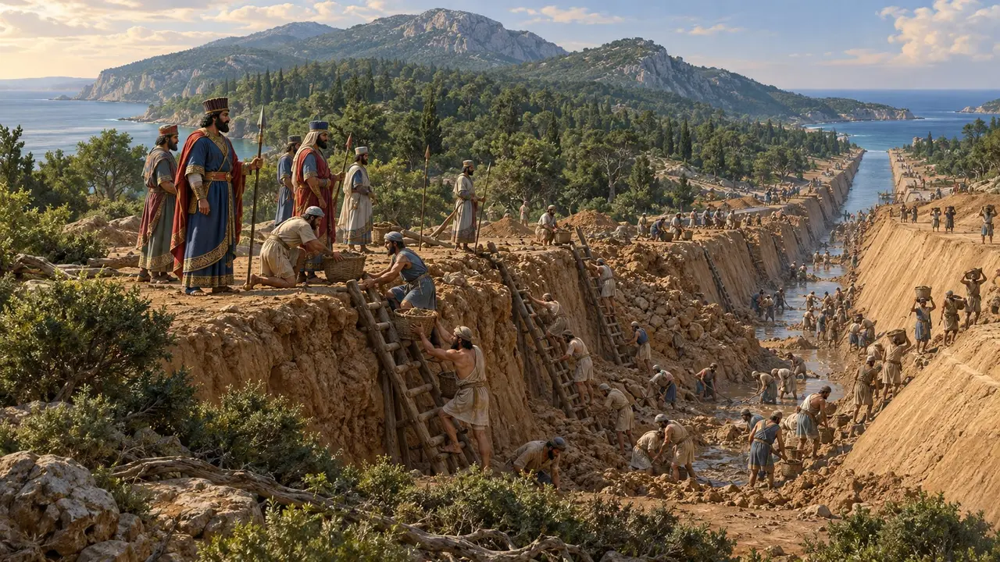
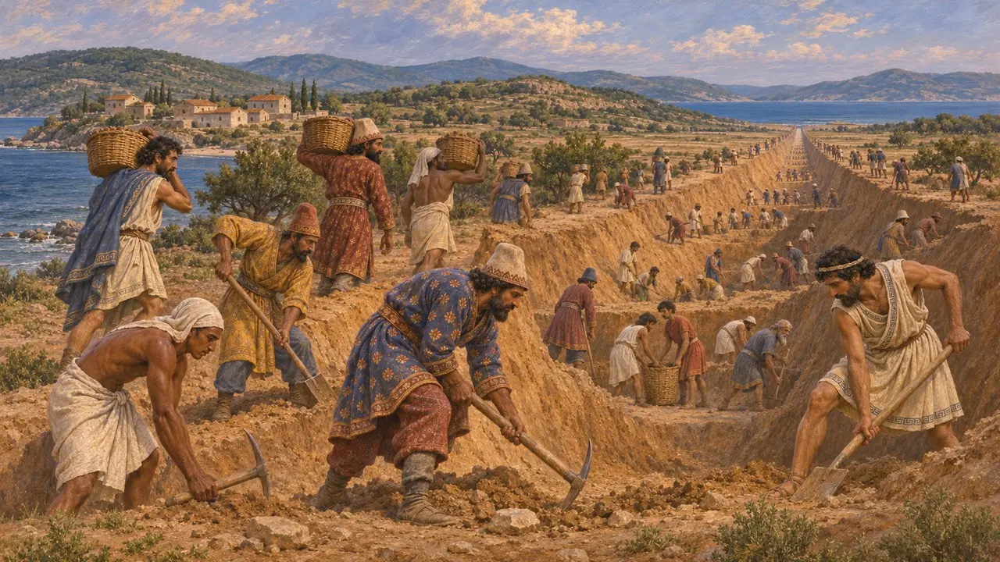
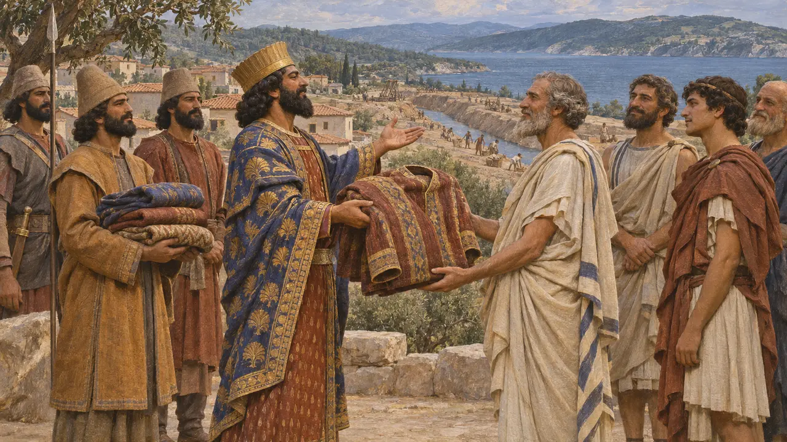
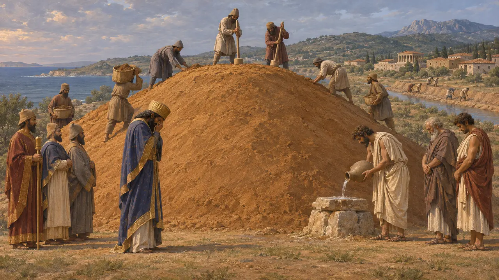
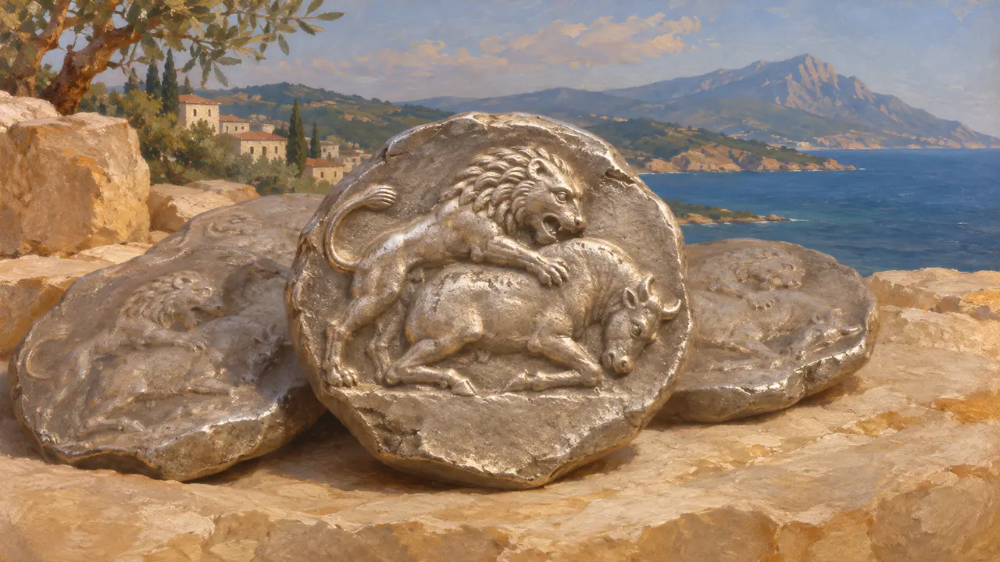

Acanthe
Cité grecque à l'étranglement de la péninsule de l'Athos, près du canal de Xerxès, 483-480 av. J.-C.
Dans le jeu : Niveau 9 : Le Canal
Acanthe était une cité grecque, fondée depuis Andros, sur la côte où la péninsule de l'Athos rejoint le continent. Le canal de Xerxès fut creusé à travers l'isthme juste au-delà, et en 480 son armée y passa dans sa marche vers l'ouest. Hérodote dit que Xerxès fit des Acanthiens ses hôtes pour leur zèle à l'ouvrage.
Dans le jeu : Le niveau de l'Athos est bâti sur la plaine côtière d'Acanthe : on y trouve la ville de ses terrassiers, ses fermes et le tertre d'Artachaiès.

La ville de l'isthme
Récit antiqueHérodote place le canal à travers l'isthme situé entre la mer d'Acanthe et le golfe de Toroné, sur une largeur d'environ 12 stades. Les terrassiers venaient des nations du Roi et des habitants de l'Athos eux-mêmes. Le tracé du canal a été repéré par relevé près des villages modernes de Nea Roda et de Tripiti.
Herodotus 7.22-23

Les hôtes du Roi
Récit antiqueHérodote raconte qu'en arrivant à Acanthe, Xerxès proclama l'hospitalité qui le liait à ses habitants, leur offrit des vêtements mèdes et les loua, car il les voyait ardents pour la guerre et avait entendu parler du canal. Le présent était un honneur ; il liait aussi la cité au Roi.
Herodotus 7.116

Le tertre d'Artachaiès
Récit antiquePendant que Xerxès se trouvait à Acanthe, Artachaiès, l'un des surveillants du canal et le plus grand des Perses, mourut. Hérodote dit que Xerxès le pleura, que l'armée éleva un tertre au-dessus de lui, et que les Acanthiens, sur l'ordre d'un oracle, lui sacrifièrent comme à un héros en invoquant son nom.
Herodotus 7.117

Les monnaies et l'histoire ultérieure
Dans les sourcesAcanthe frappa, dès la fin du VIe siècle, des monnaies d'argent montrant un lion terrassant un taureau. En 424, elle passa au Spartiate Brasidas, comme le rapporte Thucydide. Les monnaies de la cité sont la principale trace qu'on en garde pour les années perses.
Thucydides 4.84-88; Head, Historia Numorum, Macedon
Sources
- Herodotus 7.22-24, 7.115-117
- Thucydides 4.84-88
- B. S. J. Isserlin and others, The Canal of Xerxes, 2003